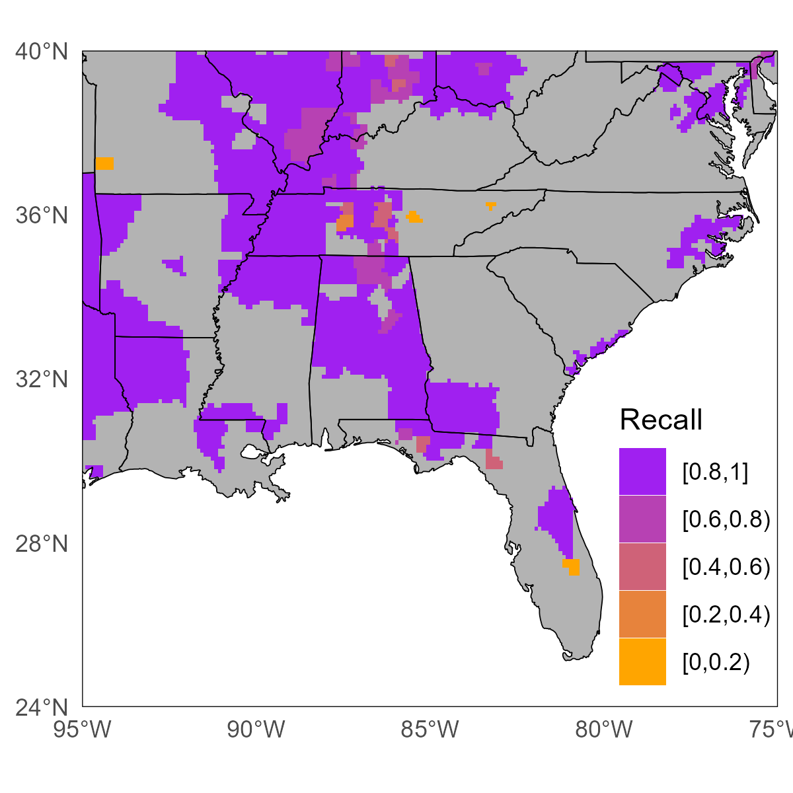

A CONUS-wide archive of severe convective storms based on NOAA AORC precipitation accumulated over 1, 3, 6, and 12 hr windows. Extreme precipitation is identified with NOAA Atlas 14 before being clustered into discrete space time footprints representing distinct storms using the clustering algorithm DBSCAN. This provides a novel database for evaluation of intensity, duration, and frequency trends and flood hazard modeling.

A novel clustering framework that incorporates space time separable covariance modeling to improve detection of hazardous weather events in meteorological datasets. Covariance decay is modeled empirically and used to parameterize the space time resolution appropriate for unbiased three-dimensional clustering. Applicable to any geophysical dataset.
EGUsphere Preprint